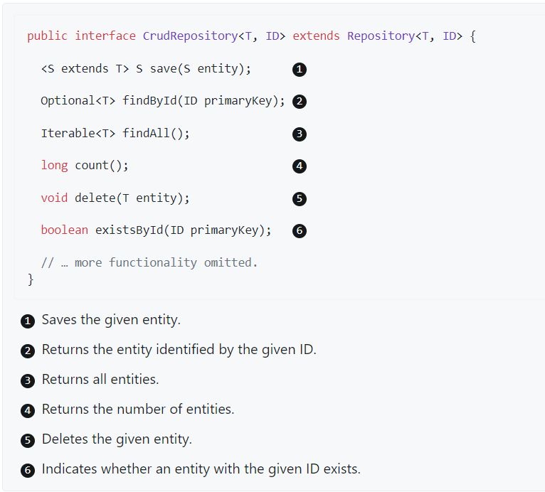

üñ≤Ô∏è Introducci√≥n a Spring Framework - Web oficial
Debido al aumento de la complejidad que presentan la mayoría de los sistemas web, tanto en temas de seguridad, funcionalidad y gráficas, la comunidad de desarrolladores se vio en la necesidad de diseñar ciertas ayudas, a fin de no tener que repetir código, reduciendo de este modo el tiempo y el espacio para el desarrollo de aplicaciones.
Lanzado por primera vez, como una plataforma de código abierto Java, en el mes de Junio del año 2003 bajo la licencia Apache 2.0, se convirtió desde entonces en el framework más popular para Java empresarial, para crear código de alto rendimiento, liviano y reutilizable.
Su finalidad es estandarizar, agilizar, manejar y resolver los problemas que puedan ir surgiendo en el trayecto de la programación.
Spring se puede considerar como el padre del los frameworks Java, ya que da soporte a varios frameworks como: Hibernate, Struts, Tapestry, EJB, JSF entre otros.
La versión actual de Spring Framework es la 6.x.x y puedes obtener la documentación desde su web oficial.
ü™î Requisitos para crear un proyecto con Spring
Para crear un proyecto con Spring debemos realizar una serie de pasos:
- Elegir el tipo de proyecto, es decir, elegir la herramienta de construcción del proyecto: Maven o Gradle y la versión de Java.
- Seleccionar las dependencias que necesitamos y su versión.
- Construir la estructura de directorios de nuestro proyecto, donde estará el código fuente, los ficheros properties, plantillas, etc.
- Uso y configuración de beans.
ü™î Beans
Para entender el concepto de bean en Spring necesitamos entender antes una serie algunos conceptos y cómo administra Spring los objetos beans.
ü™É Dependency Injection (DI)
La inyección de dependencias es un patrón de diseño que tiene como objetivo tomar la responsabilidad de crear las instancias de las clases que otro objeto necesita y suministrárselo para que esta clase los pueda utilizar.
Habitualmente nuestras clases dependen de otras para funcionar.
Ejemplo de DI
Por ejemplo, una clase que necesita buscar un registro en la base de datos necesitará de otra que se encargue de buscarlo.
Pensemos en estas dos clases. Llamemos a la primera PersonalDataService que es la encargada de tomar decisiones sobre el negocio y a la segunda PersonaDAO, la cual se encargará de acceder a la base de datos.
La clase PersonalDataService depende de la clase PersonaDAO para lograr el acceso a los datos en la base de datos, es decir, en la clase PersonalDataService sería la responsable de crear una instancia de la clase PersonaDAO.
En la inyección de dependencias ‘alguien’ externo se encarga de las dependencias que las clases necesitan.
ü™É Inversion of Control (IoC)
Spring también maneja el concepto de inversión de control ocupándose de mantener en su ‘contexto’ (application context) todas las instancias de nuestra aplicación y de inyectarle esa instancia a quien la necesite.
Spring llama a estas instancias beans.
Los beans son las instancias de las clases que están disponibles para ser reutilizados y son gestionados dentro del contenedor de Spring (Spring container). Spring sabe qué dependencias existen entre las instancias y se encarga de satisfacerlas.
Note
IoC es el trabajo que realiza Spring buscando estas dependencias entre los objetos y realizando el ‘set’ de estos beans en quien los requiera. Busca en su contenedor de beans la instancia adecuada y se la agrega al objeto cumpliendo así con la inyección de dependencias.
ü™É Definir un Bean
Para definir un nuevo bean en Spring tenemos dos opciones:
- Podemos definir explícitamente un nuevo bean mediante la anotación
@Bean. - Podemos marcar una clase Java como un bean, y permitir a Spring que lo descubra, esto se hace mediante el escaneo de componentes.
Estas son dos técnicas diferentes para añadir beans a nuestro contexto.
ü™î Qu√© es un componente @Component en Spring
Spring define un conjunto de anotaciones core que categorizan cada uno de los componentes asociandoles una responsabilidad concreta, es lo que llamamos Spring stereotypes.
Una clase con la anotación @Component es un candidato a ser escaneado mediante el proceso de negociación, e instanciado como un bean y añadido al contexto.
Cuando indicamos que una clase es un @Component, lo que hacemos es decirle a Spring que queremos que cree una instancia y la gestione.
@Component
public class MyClass {
public void doSomething() {
//..
}
}
- Buscará dentro de la aplicación las clases anotadas con
@Component - Creará una instancia de los componentes
- Dejará el componente en su contexto
- Buscará quién necesita esos componentes y los inyectará en quién los necesite.
ü™É Spring Stereotypes
Los estereotipos (Stereotypes) son componentes que extienden de @Component.
En estos momentos existen únicamente 4:
-
@Component: estereotipo general.
-
@Repository: será parte de la ‘capa’ de persistencia cuya función será el acceso a los datos.
-
@Service: será parte de la ‘capa’ de servicios encargado de gestionar las operaciones de negocio más importantes a nivel de la aplicación y aglutina llamadas a varios repositorios de forma simultánea.
-
@Controller: realiza las tareas de controlador y gestión de la comunicación entre el usuario y el aplicativo. Existe
@RestControllerque es una especialización de controller.
ü™î C√≥mo crear un proyecto con Spring en IntelliJ
Podemos ayudarnos de la herramienta spring initializr para crear el proyecto. Seleccionamos la siguiente configuración:

La exportamos y extraemos para abrir como un proyecto nuevo en IntelliJ.
Instalamos el plugin en IntelliJ llamado JPA Buddy que será una ayuda para desarrollar algunas funcionalidades.
ü™î Autoconfiguraci√≥n del proyecto
La anotación @SpringBootApplication habilita el mecanismo de configuración automática de la aplicación en función de las dependencias jar que encuentre en el classpath y se encarga del escaneo de componentes.
ü™î A√±adir entidades
Creamos un nuevo paquete llamado entities. Gracias al plugin que hemos instalado basta con hacer botón derecho sobre el paquete, New --> JPA Entity, y nos creará una entidad.
ü™î Trabajando con repositorios de Spring Data
Gracias a Spring Data JPA, que facilita el uso de tecnologías de acceso a datos, bases de datos relacionales y no relacionales, servicios de datos basados en la nube, etc., podemos trabajar con Spring Data JPA repositories. El objetivo del repositorio de Spring Data es reducir significativamente la cantidad de código repetitivo necesario para implementar capas de acceso a datos de persistencia.
La interfaz central en la abstracción del repositorio de Spring Data es Repository. Esta interfaz actúa principalmente como una interfaz de marcador para capturar los tipos con los que trabajar y para ayudarlo a descubrir interfaces que amplían esta.
Las interfaces CrudRepository y ListCrudRepository brindan una funcionalidad CRUD sofisticada para la clase de entidad que se administra.

Además de CrudRepository, hay una abstracción PagingAndSortingRepository que agrega métodos adicionales para facilitar el acceso paginado a las entidades:

ü™î Definir interfaces de repositorio
Para definir una interfaz de repositorio, primero se debe crear una clase de dominio o entidad. La interfaz debe extender el Repository y el tipo debe ser la clase de dominio y el tipo de ID.
Si desea exponer métodos CRUD para ese tipo de dominio, se puede extender de CrudRepository o una de sus variantes en lugar de Repository.
public interface TodoRepository extends JpaRepository<Todo, Long> {
}
ü™î M√©todos de consulta
Los repositorios con funcionalidad CRUD estándar suelen tener consultas en el almacén de datos subyacente. Con Spring Data, declarar esas consultas se convierte en un proceso de cuatro pasos:
-
Se declara una interfaz que extienda de
Repositoryo una de sus subinterfaces. Haz que sea de tipo entidad y su ID. -
Se declaran métodos de consulta en la interfaz.
interface PersonRepository extends Repository<Person, Long> {
List<Person> findByLastname(String lastname);
}
- Para usarlo, bastará con inyectar la instancia del repositorio en el controlador.